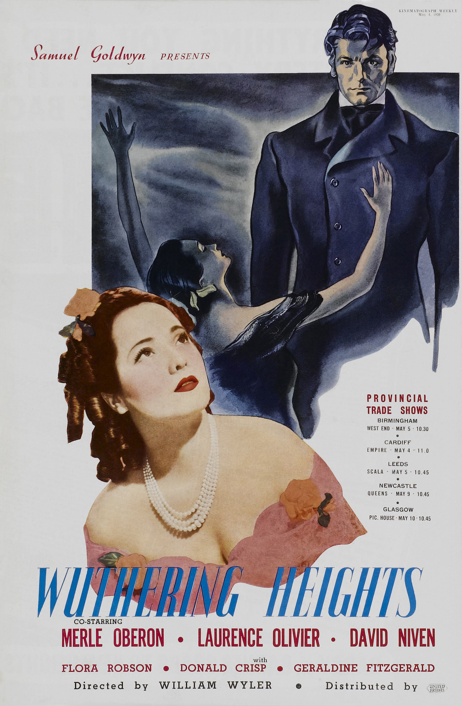

Wuthering Heights
12th Academy Awards
(Oscars 1940)
8 Nominations, 1 Award
| Nominations | ||
|---|---|---|
| Category | Nominees | Result |
| Outstanding Production | Samuel Goldwyn Productions | Nominated |
| Actor | Laurence Olivier | Nominated |
| Actress in a Supporting Role | Geraldine Fitzgerald | Nominated |
| Directing | William Wyler | Nominated |
| Writing (Screenplay) | Ben Hecht and Charles MacArthur | Nominated |
| Cinematography (Black-and-White) | Gregg Toland | Won |
| Art Direction | James Basevi | Nominated |
| Music (Original Score) | Alfred Newman | Nominated |